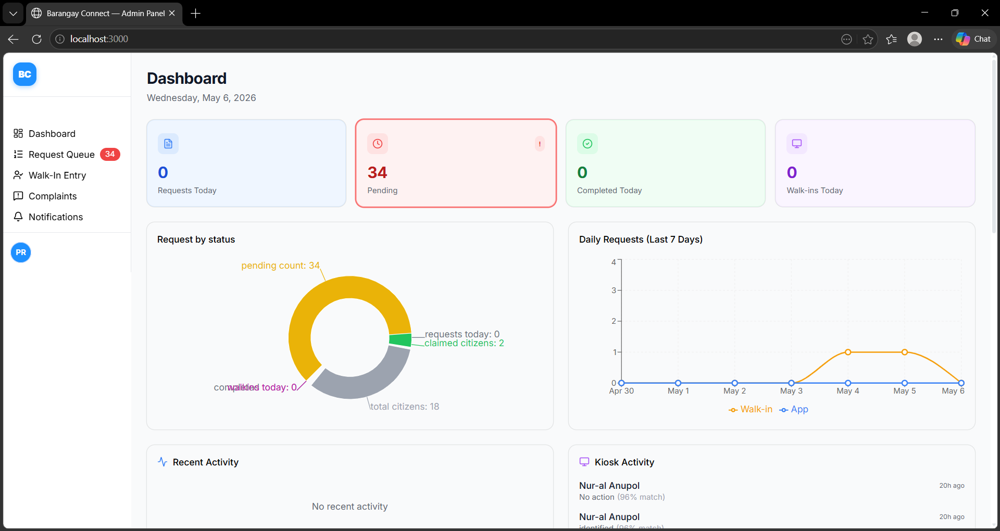
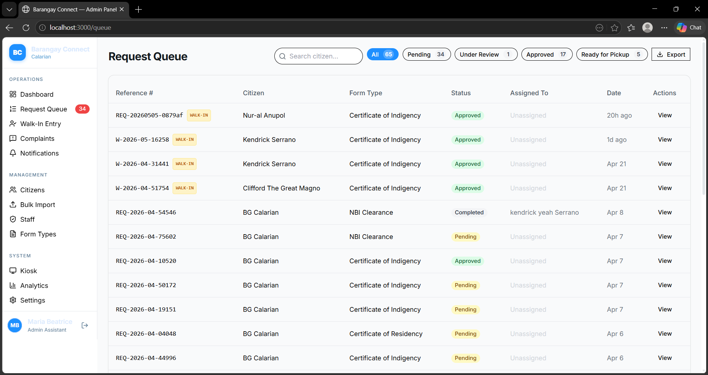
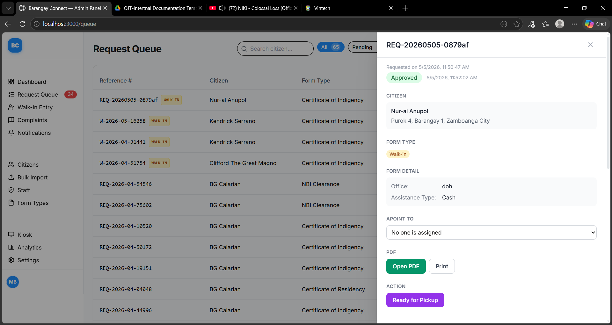
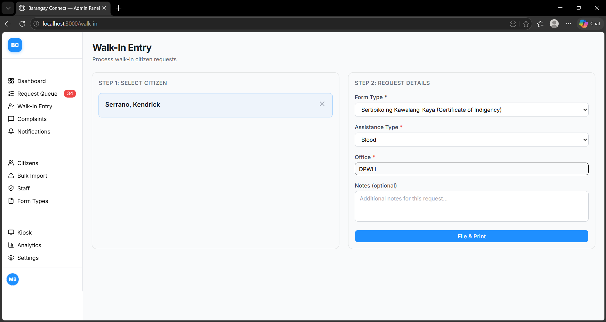
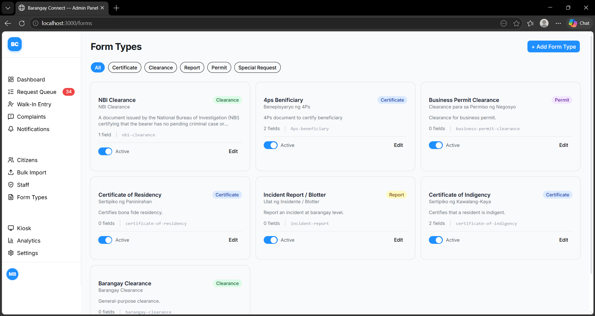
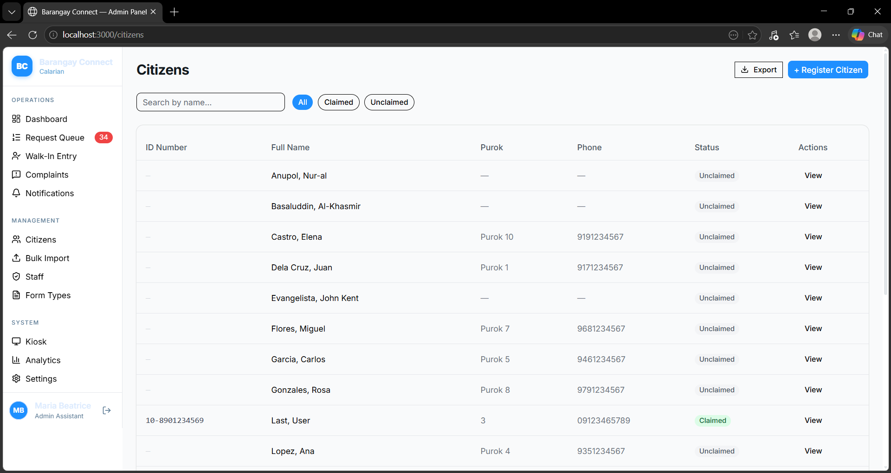

Intern Developer — Barangay Connect Project
Western Mindanao State University · Vintazk Company
About the Platform
The Web Admin Panel is the primary operations interface for barangay staff. It gives moderators, admin assistants, and barangay captains a single place to manage citizen requests, process walk-ins, handle complaints, and oversee citizen records — all in real time.
Staff monitor a live, paginated queue of citizen form requests. Moderators can review, approve, reject, or escalate each request and generate the corresponding PDF document for pickup.
Handles ~100 daily walk-in citizens. Moderators look up a citizen's profile, select the service they need, and submit a request on their behalf — eliminating manual paper-based queuing.
Admin assistants manage imported citizen profiles, edit records with a full audit trail, and oversee staff accounts. Every profile change is logged with the field, old value, new value, and reason.
Staff configure the government form types available in each barangay, set required fields, and attach template explanations. Moderators also file and track complaints lodged by walk-in citizens.
Assignment
I was assigned to the Web Admin Panel — the primary interface used by barangay staff to manage everything from the request queue to citizen profiles.
Build and maintain dashboard pages for the web admin panel
Implement paginated data tables for queue, citizens, staff, and complaints
Develop form management features including template previews
Integrate bilingual support (English + Tagalog) across all UI strings
Fix bugs reported during code review and QA cycles
Maintain code quality — remove dead code, improve readability
What I Built
A breakdown of the major features, fixes, and improvements I delivered across the project duration.
Integrated shadcn/ui into the Next.js web admin panel from scratch — installed 13 component primitives (Button, Card, Sidebar, Sheet, DropdownMenu, Avatar, Tooltip, and more), updated Tailwind configuration, and established the design system used across all web panel pages. This was the foundation every other UI contribution built upon.
Replaced the legacy custom sidebar with a fully shadcn-compatible collapsible sidebar component. Improved layout stability, collapse behavior, and spacing consistency across the dashboard shell. Applied stale role fix to ensure the sidebar correctly reflects the authenticated user's role on session reload.
Designed and built a reusable pagination system from scratch. Created the
PaginationController component and pagination.ts utility library,
then applied them to five high-traffic pages: Citizens, Queue, Staff, Audit Log, and Complaints.
Added a Select component for per-page size control.
Built and iterated on the main admin dashboard page. Developed the
Activity Feed component, wired up Recharts analytics charts
for request and complaint trends, and built the Kiosk Activity and Recent Requests feed
components. Added a full-page loading state and a SectionErrorBoundary
for graceful error handling.
Extended the moderator request queue with pagination, moderator-scoped filtering (staff see only their barangay's requests), and full bilingual translation for all UI strings. Contributed to the Request Detail Panel, adding status action controls, i18n coverage, and Supabase query invalidation on status updates.
Developed the Form Templates management section — the full CRUD interface for
creating and listing government form types. Introduced a
template explanation/preview feature with before/after visual comparisons.
Created three new shared UI components: Checkbox, Textarea,
and a generic Field. Also contributed to the generate-pdf
Supabase Edge Function integration.
Developed the Walk-In Page — the interface moderators use to process citizens who arrive at the barangay hall in person. Handles walk-in request creation, citizen lookup, and form submission on behalf of the citizen. Subsequently optimized the page's data flow and component layout for performance.
Maintained bilingual (English + Tagalog) support throughout the web panel using
next-intl. Added and corrected translation keys across
en.json and tl.json. Fixed hardcoded strings on the
Complaints, Staff, and Walk-In pages that were missing t() calls.
Corrected English key values that were mistakenly written in Tagalog.
Applied code review fixes including stale role session resolution, Suspense boundary additions, TanStack Query cache invalidation corrections, and audit log wiring. Fixed a moderator queue filter bug, a Recharts rendering bug on the dashboard, and removed unnecessary comments and dead code across multiple pages.
Application UI
Sample screens from the Web Admin Panel built during the internship. Click any image to enlarge.






By the Numbers
A snapshot of the overall scope of work delivered during the internship.
Personal Growth
Beyond the technical deliverables, this internship represented a significant personal and professional turning point.
Before this project, I was a dedicated Java backend developer — Spring Boot was my comfort zone. I had never touched frontend or UI development. When I was assigned to the Web Admin Panel, I was genuinely hesitant about whether I could deliver. As the weeks went on and the tasks kept coming, something shifted. Each feature I shipped gave me a bit more confidence. By the end, I was no longer someone who "only does backend." I can now build frontend interfaces with confidence — especially using React.js.
Dedicated Java backend developer
Primary framework: Spring Boot
No experience in frontend or UI development
Hesitant about being assigned to a Next.js project
Uncertain whether I could perform in the role
Capable full-stack developer (backend + frontend)
Proficient in React.js and the Next.js ecosystem
Comfortable with component-driven UI architecture
Confident taking on frontend tasks independently
Grew with every task — hesitation turned into ownership
Learned component architecture, hooks, state management, and data fetching patterns through real production code.
Gained hands-on experience with Tailwind CSS, shadcn/ui, and how to build consistent, accessible interfaces from a component library.
Bridged the gap between backend logic and the UI layer — connecting Supabase queries, Edge Functions, and React components end to end.
The most important lesson: confidence is not built by waiting to feel ready — it is built by doing the work and seeing it ship.
Acknowledgement
I would like to extend my sincere gratitude to Vintazk and Nexzys Intelligence for providing me with the opportunity to experience actual industry-level software development. This internship allowed me to showcase the skills I already had, challenge myself in areas I had never explored before, and develop new competencies that I will carry forward in my career. The experience I gained here goes beyond code — it shaped how I think as a developer.